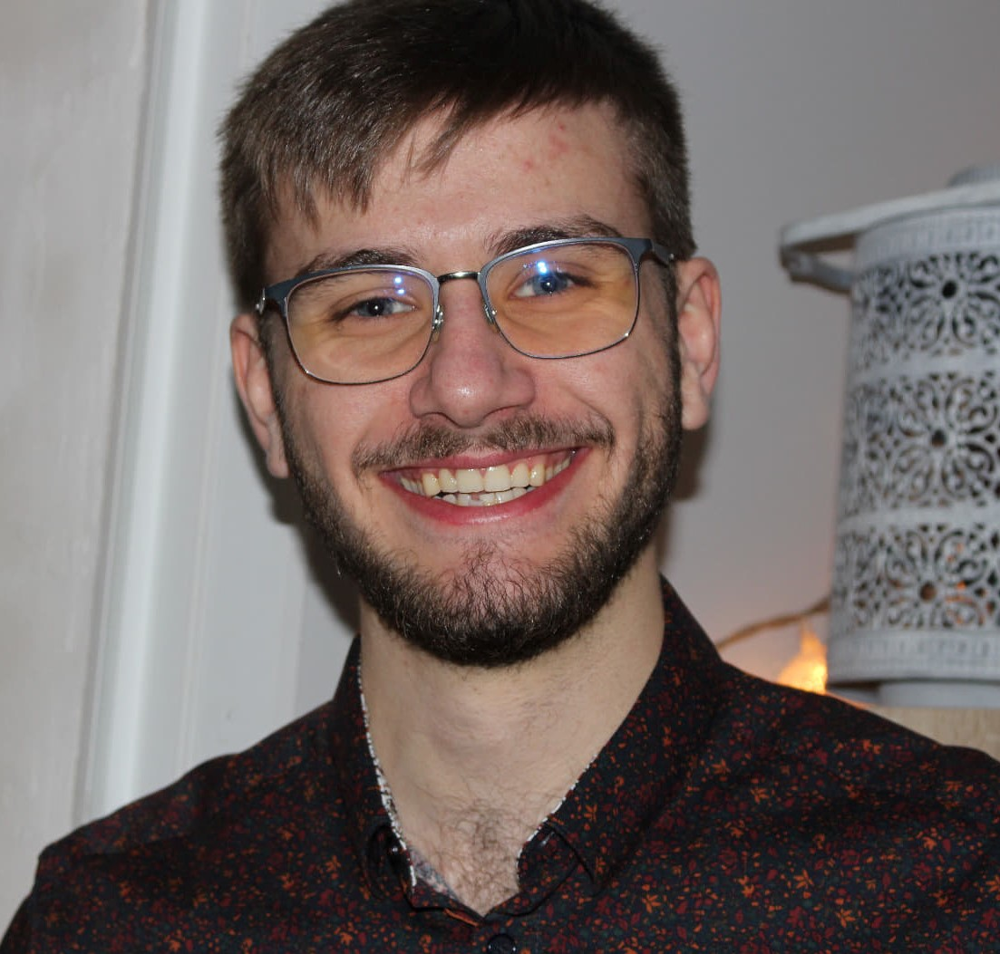

Présentation

- Vivian Michel
- Etudiant Développeur d'application - JavaScript React (OpenClassrooms)
- En recherche d'alternance
- Détenteur d'un DUT Informatique
- Photographe amateur

- Etudiant Développeur d'application - JavaScript React (OpenClassrooms)
- En recherche d'alternance
- Détenteur d'un DUT Informatique
- Photographe amateur